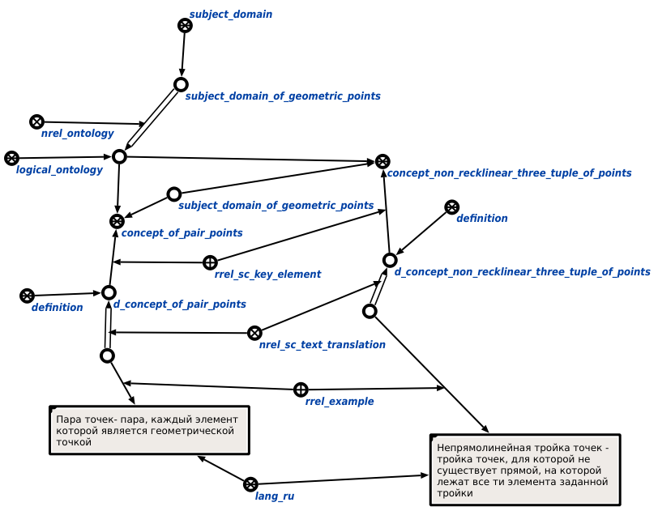

Команда формирования логической онтологии заданной предметной области предназначена для формирования логической онтологии для определенной предметной области. Единственным аргументом команды является предметная область, для которой необходимо сформировать логическую онтологию. Результатом выполнения команды является логическая онтология, сформированная для заданной предметной области. Например:
